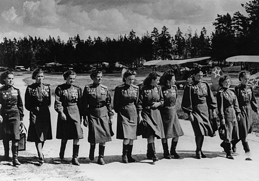

Sovjetisk krigshistorie:
Nattheksene
I mai 1942 ble et nytt nattbomberregiment opprettet i Sovjetunionen. Regiment 588 ville få som sin første oppgave å angripe de godt forsvarte tyske stillingene på Krimhalvøya. Flyene som de hadde til rådighet lignet mer på en levning fra første verdenskrig enn noe som hørte hjemme i Blietz-kriegens Messerschmidter og Jak-maskiner, nemlig dobbeltdekkeren Polikarpov PO-2.
PO-2 hadde én flyger og én navigatør og kunne frakte maksimum fire bomber. De i utgangspunktet 254 kvinnene i regimentet kunne nok ane at de ikke nødvendigvis hadde noen enkel framtid foran seg… hvis noen framtid i det hele tatt. De gjennomførte imidlertid sin oppgave med et slikt mot og med en slik dyktighet at ikke bare ble de beundret av sine egne, men de tyske soldatene opplevde et sant mareritt under deres opptil femten til atten angrep hver eneste natt. Og etterhvert som de forsto at det var kvinner som fløy disse nattlige toktene gjennom deres sperreild av morderisk antiluftskyts ga de dem navnet “nattheksene”.
Noen netter var verre enn andre, og en natt skjøt tyskerne ned ikke mindre enn fire fly i løpet av femten minutter. Noen ganger kuttet pilotene motoren før den siste innflyginga, og glidefløy stille inn over målet. Som oftest gikk det bra å få start på motoren igjen etter at bombene var sluppet!
I løpet av krigen fløy de til sammen 24 000 tokt og kastet (bokstavelig talt!) 23 000 tonn med bomber over tyske stillinger nær fronten.

Ved krigens slutt hadde hver eneste kvinne i regimentet fått en eller helst flere medaljer og utmerkelser og 23 av dem var dekorert med ordenen “Helt av Sovjetunionen”.
Men den tittelen disse fantastiske kvinnene i sine skrøpelige fly fikk av sine tyske fiender var kanskje den aller riktigste. Det de gjorde, virker i ettertid nesten umulig. En heksekunst. De var virkelig natthekser. Og amasoner så gode som noen.
Ingar har også tidligere skrevet om “nattheksene”. Sjekk artikkelen “Amasoner og opprørere” fra 2002, nærmere bestemt avsnittet “Sovjetunionen – “Krigen om moderlandet”.